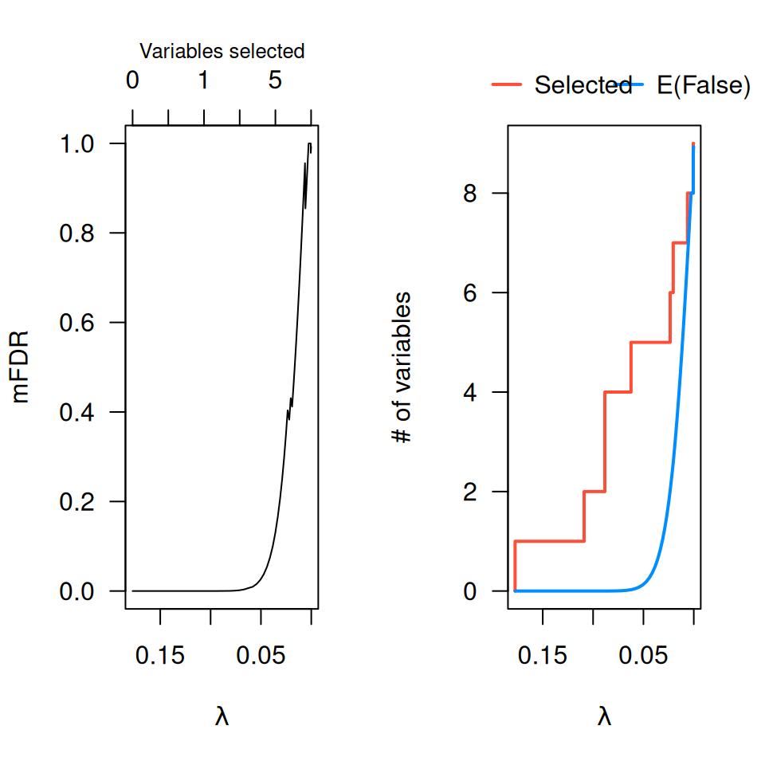
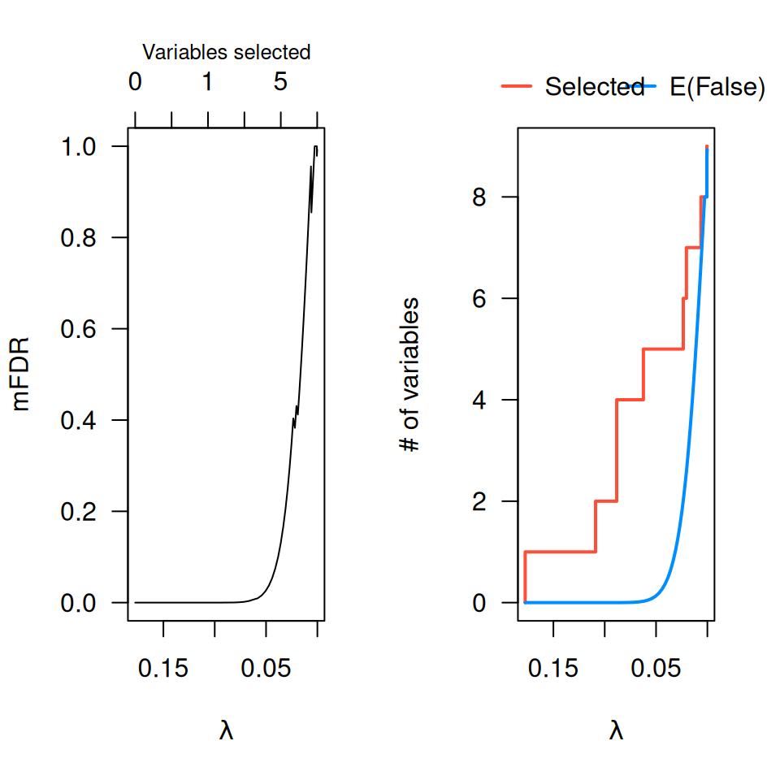

Estimates the marginal false discovery rate (mFDR) of a penalized regression model.
Value
An object with S3 class mfdr inheriting from data.frame, containing:
- EF
The number of variables selected at each value of
lambda, averaged over the permutation fits.- S
The actual number of selected variables for the non-permuted data.
- mFDR
The estimated marginal false discovery rate (
EF/S).
Details
The function estimates the marginal false discovery rate (mFDR) for a
penalized regression model. The estimate tends to be accurate in most
settings, but will be slightly conservative if predictors are highly
correlated. For an alternative way of estimating the mFDR, typically more
accurate in highly correlated cases, see perm.ncvreg().
Examples
# Linear regression --------------------------------
data(Prostate)
fit <- ncvreg(Prostate$X, Prostate$y)
obj <- mfdr(fit)
obj[1:10,]
#> EF S mFDR
#> 0.84343 0.000000e+00 0 0.000000e+00
#> 0.78658 1.418692e-11 1 1.418692e-11
#> 0.73357 3.642789e-11 1 3.642789e-11
#> 0.68413 1.098086e-10 1 1.098086e-10
#> 0.63802 3.833845e-10 1 3.833845e-10
#> 0.59502 1.516932e-09 1 1.516932e-09
#> 0.55492 6.608721e-09 1 6.608721e-09
#> 0.51752 3.065378e-08 1 3.065378e-08
#> 0.48264 1.460789e-07 1 1.460789e-07
#> 0.45011 6.907848e-07 1 6.907848e-07
# Comparison with perm.ncvreg
op <- par(mfrow=c(2,2))
plot(obj)
plot(obj, type="EF")
pmfit <- perm.ncvreg(Prostate$X, Prostate$y)
plot(pmfit)
plot(pmfit, type="EF")
 par(op)
# Logistic regression ------------------------------
data(Heart)
fit <- ncvreg(Heart$X, Heart$y, family="binomial")
obj <- mfdr(fit)
head(obj)
#> EF S mFDR
#> 0.17746 0.000000e+00 0 0.000000e+00
#> 0.16550 6.893422e-13 1 6.893422e-13
#> 0.15435 2.683651e-11 1 2.683651e-11
#> 0.14394 6.329530e-10 1 6.329530e-10
#> 0.13424 9.776334e-09 1 9.776334e-09
#> 0.12519 1.054851e-07 1 1.054851e-07
op <- par(mfrow=c(1,2))
plot(obj)
plot(obj, type="EF")

par(op)
# Cox regression -----------------------------------
data(Lung)
fit <- ncvsurv(Lung$X, Lung$y)
obj <- mfdr(fit)
head(obj)
#> EF S mFDR
#> 0.44806 0.000000e+00 0 0.000000e+00
#> 0.41786 9.926598e-06 1 9.926598e-06
#> 0.38970 3.996605e-05 1 3.996605e-05
#> 0.36344 1.392150e-04 1 1.392150e-04
#> 0.33894 4.272559e-04 1 4.272559e-04
#> 0.31610 1.173937e-03 1 1.173937e-03
op <- par(mfrow=c(1,2))
plot(obj)
plot(obj, type="EF")
par(op)
# Logistic regression ------------------------------
data(Heart)
fit <- ncvreg(Heart$X, Heart$y, family="binomial")
obj <- mfdr(fit)
head(obj)
#> EF S mFDR
#> 0.17746 0.000000e+00 0 0.000000e+00
#> 0.16550 6.893422e-13 1 6.893422e-13
#> 0.15435 2.683651e-11 1 2.683651e-11
#> 0.14394 6.329530e-10 1 6.329530e-10
#> 0.13424 9.776334e-09 1 9.776334e-09
#> 0.12519 1.054851e-07 1 1.054851e-07
op <- par(mfrow=c(1,2))
plot(obj)
plot(obj, type="EF")

par(op)
# Cox regression -----------------------------------
data(Lung)
fit <- ncvsurv(Lung$X, Lung$y)
obj <- mfdr(fit)
head(obj)
#> EF S mFDR
#> 0.44806 0.000000e+00 0 0.000000e+00
#> 0.41786 9.926598e-06 1 9.926598e-06
#> 0.38970 3.996605e-05 1 3.996605e-05
#> 0.36344 1.392150e-04 1 1.392150e-04
#> 0.33894 4.272559e-04 1 4.272559e-04
#> 0.31610 1.173937e-03 1 1.173937e-03
op <- par(mfrow=c(1,2))
plot(obj)
plot(obj, type="EF")
 par(op)
par(op)